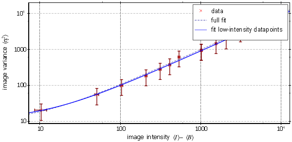
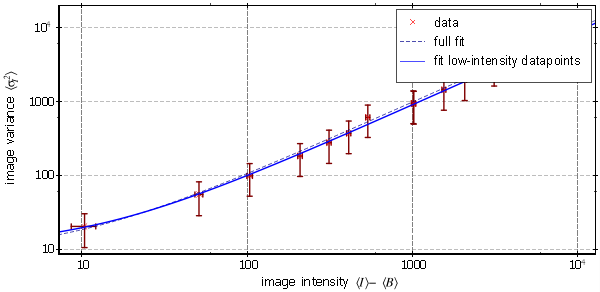
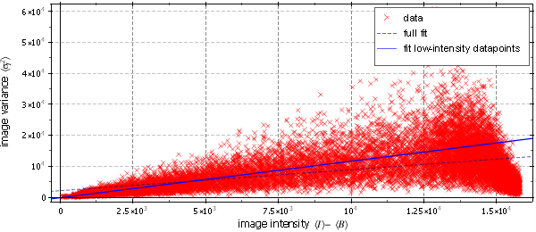
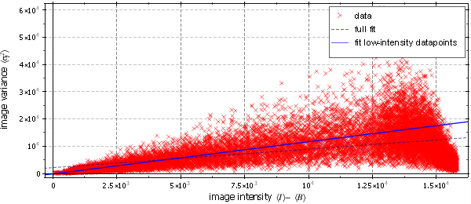
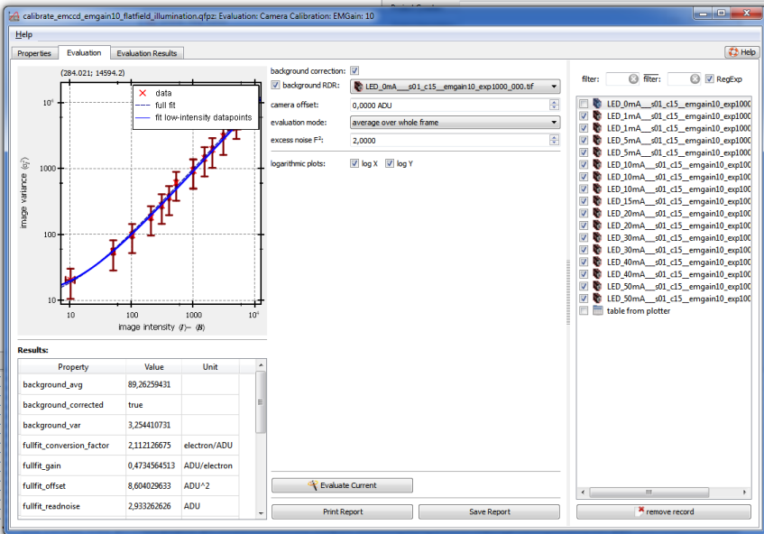

$$qf_commondoc_header.start$$ $$qf_commondoc_header.end$$
$$see:Also see the Tutorials for this plugin.$$
Introduction
Theory
Every electronic camera measures a signal with a specific noise structure. This noise can be used to obtain the camera parameters, such as its gain $(G)$, which gives the number of AD-units (ADUs) per detected photo-electron. Together with the quantum efficiency $(\eta_{phot})$ of the device, this allows to extract the incident number of photons from an image signal.
Generally the intensity noise variance $(\sigma_I^2)$ of a camera pixel depends on the incident intensity:$$ref:Reibel2003:Y. Reibel, M. Jung, M. Bouhifd, B. Cunin, and C. Draman. CCD or CMOS camera noise characterisation. The European Physical Journal Applied Physics, 21(1):75�??80, 2003. doi: 10.1051/epjap:2002103.$$$$ref:DEWEERT2004:Michael J. DeWeert, Je�rey B. Cole, Andrew W. Sparks, and Andrew Acker. Photon transfer methods and results for electron multiplication CCDs. In Andrew G. Tescher, editor, Applications of Digital Image Processing XXVII, volume 5558 of SPIE Proceedings, pages 248�??259. SPIE, 2004. doi: 10.1117/12.562223.$$$$jankrieger_phdthesis_ref$$
$[\sigma_I^2=\sigma_{read}^2+\underbrace{G^2\cdot\mathcal{F}^2\cdot\eta_{phot}\cdot\Phi\cdot\tau_{exposure}}{=\sigma_{phot}^2}]$
Here $(\sigma_{read}^2)$ is the readout noise contribution, $(G)$ is the camera gain, $(\mathcal{F}^2)$ is the excess noise factor (which is usually $(\mathcal{F}^2=1)$, but $(\mathcal{F}_{EMCCD}^2=2)$ for EM-CCD cameras or other cameras with a stochastic gain process $$ref:HIRSCH2013:Michael Hirsch, Richard J. Wareham, Marisa L. Martin-Fernandez, Michael P. Hobson, Daniel J. Rolfe, and Chin-Tu Chen. A stochastic model for electron multiplication Charge-Coupled devices �?? from theory to practice. PLoS ONE, 8(1):e53671, 2013. doi: 10.1371/journal.pone.0053671.$$) and $(\Phi)$ is the incident photon flux ($(\Phi\cdot\tau_{exposure})$ is the number of incident photons during the exposure time $(\tau_{exposure})$). On the other hand, the detected image intensity is:
$[ I=B+G\cdot\eta_{phot}\cdot\Phi\cdot\tau_{exposure}, ]$
where $(B)$ is the offset, that most cameras ass to the signal and also incorporates the dark-counts. By comparing these two equations, we see, that the noise is mainly due to the noise in detected photons, which is a Poissonian random process (therefore $(\sigma_{phot}^2\propto\ I-B)$).
If we compare again the two equations from the last paragraphs, we can rewrite the noise as:
$[\sigma_I^2=\sigma_{read}^2+G\cdot\mathcal{F}^2\cdot(I-B).]$Therefore a plot of $(\sigma_I^2)$ vs. the background-corrected intensity $(I-B)$ should yield a line with a slope of $(G\cdot\mathcal{F}^2)$ and the gain can readily be determined from this line.
From the quantities above, the signal-to-noise ratio can be defined:
$[ \mbox{SNR}=\frac{I-B}{\sigma_I} ]$
Plugin Functionality
This plugin estimates the image noise from a set of image time-series ( as image stacks in the project). The image stacks have to contain at least two frames (better: >10), so an average and a variance for each pixel can be obtained. The plugin supports two modes for different types of input data:
- flatfield illumination (average over whole frame): In this mode, you have to illuminate all pixels with the same intensity (you can mask pixels, that do not fit) and then take several stacks at different illumination intensities or exposure times (red: mask):


 Then the plugin background-corrects each stack (with a background stack, or a given average background signal) and calculates the average intensity $( I-B)$ and variance $(\sigma_I^2)$ for each pixel. Both quantities are averaged over each frame and finally plotted as a scatter graph:

A linear fit then yields the desired parameters.
Then the plugin background-corrects each stack (with a background stack, or a given average background signal) and calculates the average intensity $( I-B)$ and variance $(\sigma_I^2)$ for each pixel. Both quantities are averaged over each frame and finally plotted as a scatter graph:

A linear fit then yields the desired parameters.
- gradient illumination (evaluate each pixel): In this mode, you have to illuminate the camera with an intensity gradient, which spans (ideally) the whole value range:
 In practice you can also take a series of several gradients with different illumination intensities. In both cases, the average and noise are calculated for each pixel and are then plotted as a scatter graph (the drop-off at higher image intensities is due to the saturation of pixels, which lower the variance!):

Finally again a fit is performed.
In practice you can also take a series of several gradients with different illumination intensities. In both cases, the average and noise are calculated for each pixel and are then plotted as a scatter graph (the drop-off at higher image intensities is due to the saturation of pixels, which lower the variance!):

Finally again a fit is performed.
The plugin actually performs two fits: One to the complete dataset and one to only the half of the datapoints, where the intensity was in the lower half. This allows to overcome problems with saturated pixels and non-linearities of the camera.
User Interface
$$see:Also see the Tutorials for this plugin.$$
First you will have to add several image stacks to the project, which contain your acquisition. Also an additional image stack for the background-correction should be loaded (ideally acquired with the same camera settings, but without illumination/at closed shutter). then you can add a Camera Calibration evaluation object, using the main-window menu entry: Data Items | Insert Evaluations |  Camera Calibration. After double-clicking on the new project entry, the evaluation editor window opens:
Camera Calibration. After double-clicking on the new project entry, the evaluation editor window opens:

The top-left shows the variance vs. intensity plot and a table with evaluation results, which is filled, as soon as an evaluation has been performed. At the right of the window, you see a list of all available image stacks in the project. In this list, you have to select the stacks, that should be used by checking them. On the rhs of the plot, you can edit the evaluation parameters and start an evaluation:
- background correction: switches the background correction on and off
- background RDR: Here you can select one image stack, which is used for the background correction. It has to have the same size, as the other image stacks. This stack is averaged in time, and yields the correction offset $(B)$ for each pixel in the measurements. So the offset may be slightly different for different pixels, accounting for any structures in the offset of the camera. If no stack is available, you can set the camera offset (see below) as a number and un-check the background RDR.
- camera offset: This number is subtracted from each pixel, if the background correction is active (in addition to the ackground RDR!!!)
- evaluation mode: Here you can select the image stcak type. See above for an explanation of the available modes
- excess noise F2: Here you can give the excess noise factor of your camera, which is usually 1. For an EM-CCD camera it is 2.
- logarithmic plots: Switches the two axes of the plot to logarithmic/non-logarithmic. $$note:This is not an evaluation parameter, so you dont have to re-evaluate for this to take effect!$$
 Evaluate Current: runs the evaluation and finally displayes the results.
Evaluate Current: runs the evaluation and finally displayes the results.- Print/Save Report: prints/saves a report of the results as a PDF/ODF/...
$$note: If you change the evaluation parameters, you'll have to restart the evaluation, so the new parameters take effect!$$
You can switch the widgets over to a second plot, which displays the SNR (see above), as calculated from the data. In addition the expected SNR curve of an ideal image sensor is shown. If you supplied an excess noise factor $(\mathcal{F}^2\neq1)$, also the SNR curve for that $(\mathcal{F}^2)$ is given. For this plot the intensity is converted to photo-electrons, using the factor $(g)$ extracted from the low-intensity fraction. The curve is (cf. above):
$[ \mbox{SNR}=\frac{\sqrt{g\cdot(I-B)}}{\sqrt{\mathcal{F}^2}} ]$
References
$$references$$